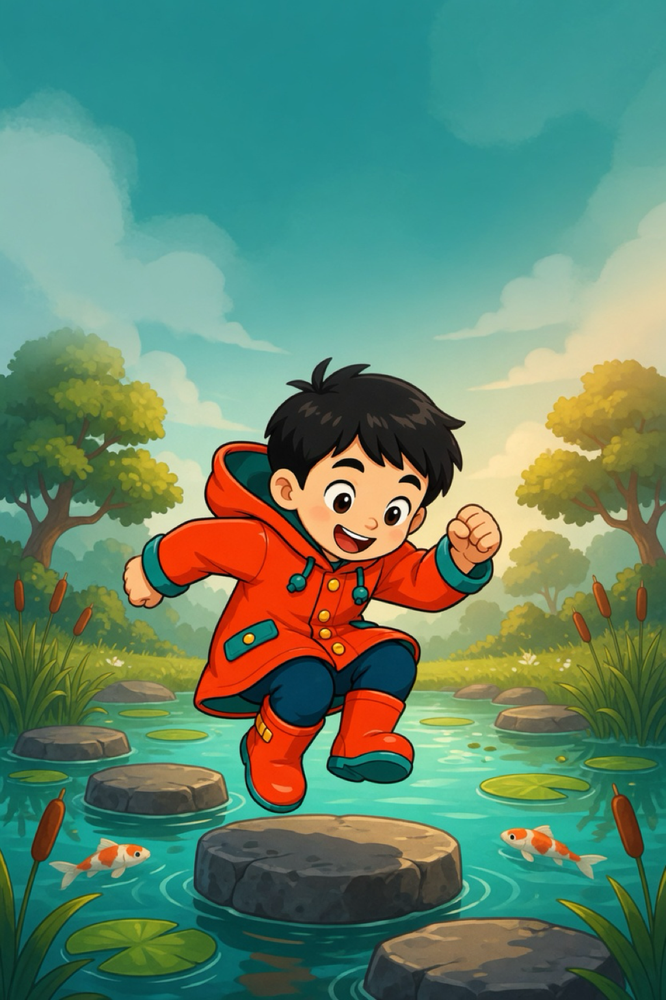

0
연속 ×1
🔊
⏸
돌은 모두 같은 크기예요. 숫자만 보고 건너요.
이번 줄
3 이상 6 미만

🔊
폴
짝
이
빈 돌은 빠진다
5학년 2학기 · 수의 범위와 어림
최고 0칸
폴짝 건너기!
어떻게 놀아요? 〉
1/3
팻말을 봐요
다음
어느 연못으로?
여유 폴짝 · 목숨 5
아슬 폴짝 · 목숨 3
타이틀로
왜 이 돌이 안전했을까요?
풍덩!
⭐
⭐
⭐
건넌 칸
0
점수
0
최고 콤보
0
다시 폴짝!
연못 고르기
잠시 멈춤 · 스페이스